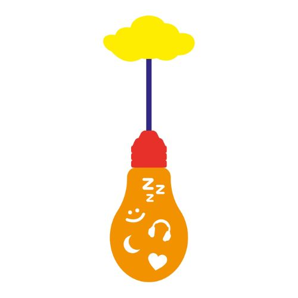

Soy Maria Fernanda Ramirez Torres, estoy en el último ciclo de la carrera de DDP.
Durante mi experiencia de educación, he demostrado que soy capaz de realizar grandes
proyectos, me considero una persona muy responsable, empática, buena para trabajar
en equipo y conseguir buenos resultados.

 Estudio la carrera de DDP (Dirección y Diseño Publicitario),pero en lo que me quiero
especializar es en el BRANDING, crear e identificar una marca con colores y formas.Realizar el packaging
de productos con todo lo que la marca concierne y asi tambien poder realizar un buen merch.
IDEA DE PROYECTO: Crearemos un Botón de ayuda para discapacitados, cuando la persona cuidadora se encuentre en otra parte de la casa y la persona discapacitada necesite ayuda,
solo necesitara presionar el botón rojo para que la persona encargada de su cuidado se de cuenta que necesita ayuda.
Estudio la carrera de DDP (Dirección y Diseño Publicitario),pero en lo que me quiero
especializar es en el BRANDING, crear e identificar una marca con colores y formas.Realizar el packaging
de productos con todo lo que la marca concierne y asi tambien poder realizar un buen merch.
IDEA DE PROYECTO: Crearemos un Botón de ayuda para discapacitados, cuando la persona cuidadora se encuentre en otra parte de la casa y la persona discapacitada necesite ayuda,
solo necesitara presionar el botón rojo para que la persona encargada de su cuidado se de cuenta que necesita ayuda.
En nuestro dibujo realizado en clase, quisimos representar los gustos que cada uno de los participantes;
como la pasión por la música, el romanticismo, el sueño, la noche.Cada uno de nosotros quisimos unir nuestros
gustos en un foco para representar la luz de nuestra vida y nuestras ideas.
